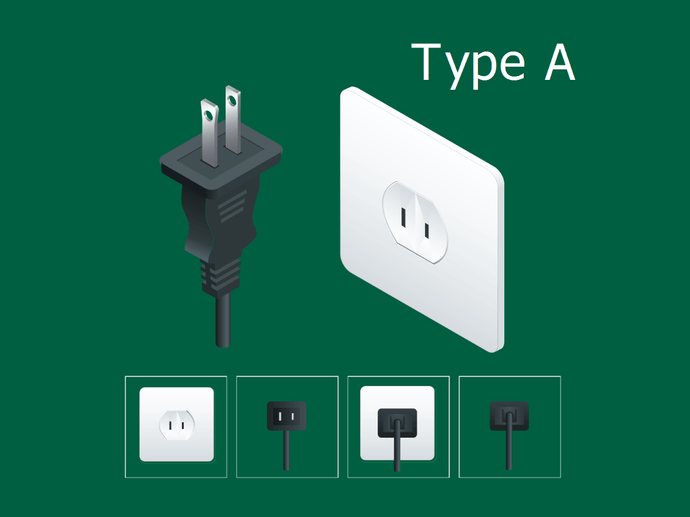

Type A • Class II
View Compatibility Specs
Type A: North American Un-Grounded
The standard ungrounded utility socket featuring two thin parallel slots. Designed strictly for low-power, double-insulated small electronics and phone chargers across North America and Japan.
Pin Geometry: 2 flat parallel blades
Primary Regions: United States, Canada,
Japan, Mexico
Mains Voltage: 100V – 127V (15 Amp max)